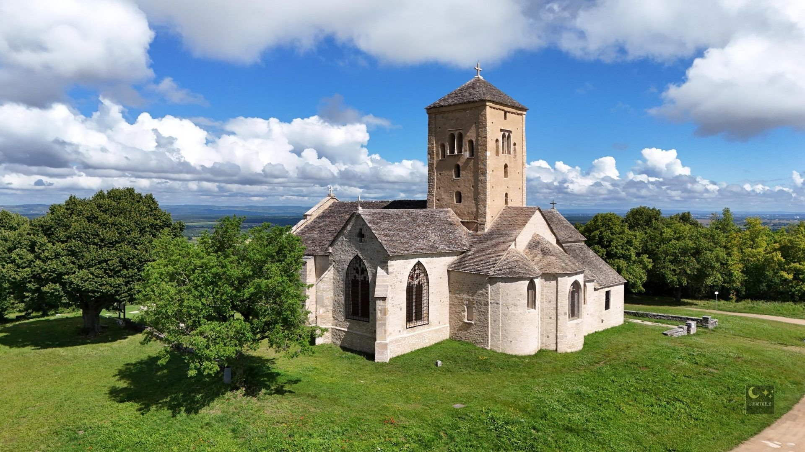
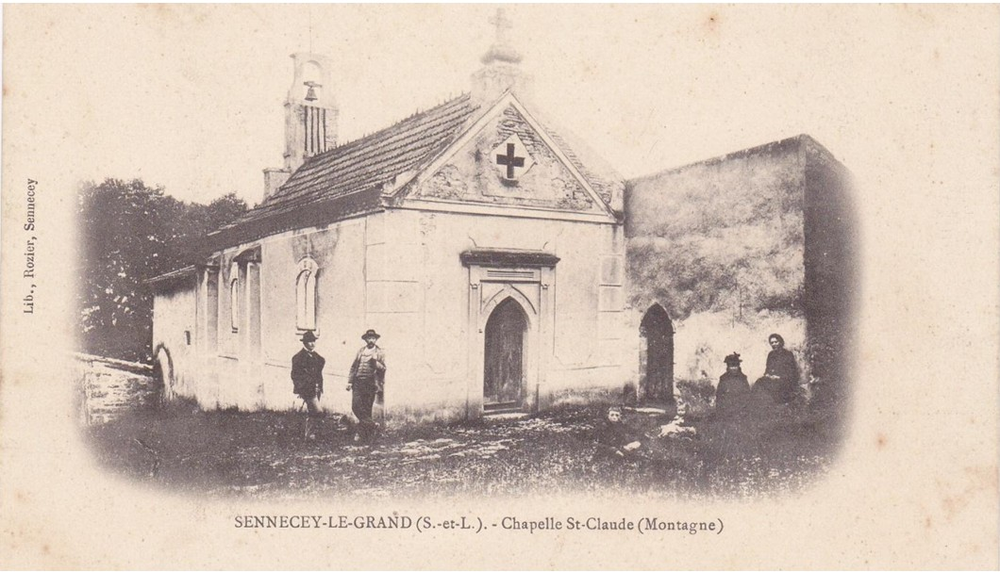
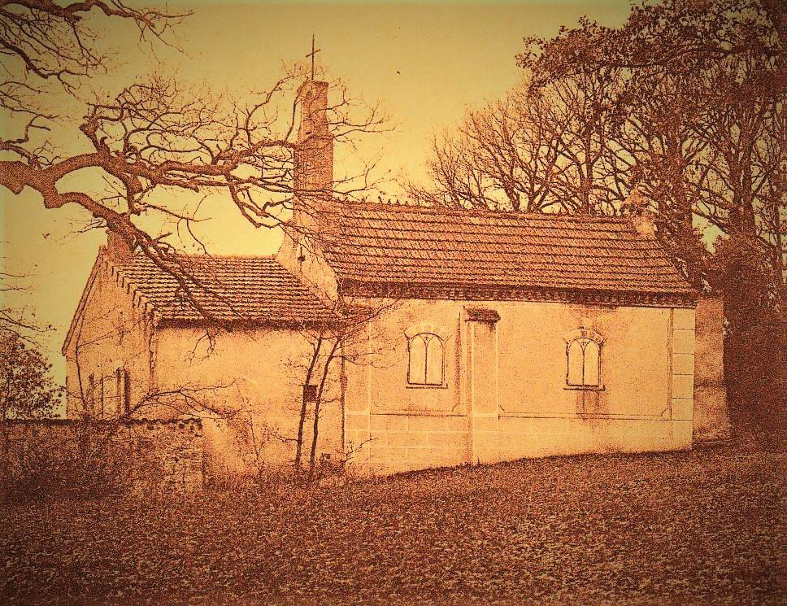

Localisation & Accès
Niché dans un écrin forestier paisible, le site de l'Ermitage se situe entre la commune de Sennecey-le-Grand et l'église Saint-Martin de Laives. Pour y accéder, les visiteurs empruntent un chemin de montée offrant une transition douce entre la plaine et la quiétude boisée de la colline.

L'église Saint-Martin de Laives, voisine du site
Carte satellite interactive - L'Ermitage au cœur de la forêt
Les origines et les premiers ermites (XVIIe siècle)
La chapelle de l'Ermitage a été fondée sous le patronage de Saint-Claude à la fin du XVIe siècle ou au tout début du XVIIe siècle par les seigneurs et barons de Sennecey, notamment la famille de Bauffremont. Conçu pour permettre une vie d'isolement et d'autarcie, le site comprenait à l'origine la chapelle reliée à deux chambres pour l'ermite, une cour fermée par des murs, un potager et une citerne pour recueillir les eaux de pluie.
Le premier ermite connu, **Claude Tivollet**, y vécut durant 25 ans dans la prière et la contemplation avant de s'éteindre le 5 avril 1637. Respecté par toute la communauté, il fut inhumé directement dans la nef de la chapelle.
Ses successeurs continuèrent d'inspirer une grande ferveur populaire dans toute la région. Parmi eux, **Jacques Mercier** se distingua en 1675 en faisant un don généreux de 1 500 livres aux Jésuites du collège de Chalon. La ferveur pour ce lieu était telle qu'en 1705, le Pape Clément XI accorda officiellement des indulgences plénières aux pèlerins qui venaient se recueillir dans la chapelle le jour de la Saint-Claude.
Le drame des "Chauffeurs" et le déclin (XVIIIe siècle)
Au cours du XVIIIe siècle, la vie paisible de l'Ermitage fut brutalement interrompue par un fait tragique. Des bandits de grand chemin, surnommés les « chauffeurs », s'introduisirent dans la demeure du dernier ermite. Persuadés que le vieil homme cachait un trésor, ils le suspendirent dans sa cheminée et lui brûlèrent les pieds à petit feu pour le faire parler. L'ermite, qui n'avait pour seule richesse que sa foi, mourut dans d'atroces souffrances. Suite à ce drame, le site fut déserté et tomba lentement dans l'oubli et le délabrement.
Rédemption et restauration (XIXe siècle)
Après la Révolution, le domaine passa entre les mains de plusieurs propriétaires privés. En 1834, les frères Charpy firent l'acquisition du bois et des ruines. C'est finalement en 1861 que **Charles Pierre Charpy**, ancien notaire et juge de paix de Sennecey, devint l'unique propriétaire.
Sensibilisé à la sauvegarde de ce patrimoine, il lança en 1872 une restauration totale et d'envergure. La toiture et les plafonds furent entièrement rebâtis, une nouvelle croix de pierre fut érigée et un campanile surmonté d'une cloche fut installé pour dominer le chevet. Lors des travaux, une découverte majeure fut faite : un coffret contenant de précieuses reliques sacrées fut exhumé.
Le 5 juin 1873, la chapelle fut solennellement bénie devant une foule immense de plus de 1 200 personnes. Cet événement relança de nombreuses traditions locales, comme les processions de la Saint-Claude ou les rassemblements festifs de la jeunesse de Laives et de Sennecey le lundi de Pâques.

La chapelle après la restauration (carte postale ancienne du XIXe siècle)
Le XXe siècle et le sauvetage moderne

La chapelle de l'ermitage au début du XXème siècle
En 1881, le domaine entra par héritage dans la famille Bouchard (négociants à Beaune) qui l'utilisa pour loger des gardiens et faire paître des troupeaux. Cependant, après la Seconde Guerre mondiale, le site fut à nouveau délaissé. Faute d'entretien, le bâtiment fut pillé, dépouillé de ses pierres de taille et envahi par une forêt dense.
La commune de Sennecey-le-Grand racheta l'ensemble des parcelles en 1994 pour stopper la destruction du site. Finalement, c'est en **2023** qu'un accord décisif fut signé entre la mairie et l'association **Sennecey Patrimoine**. Cette union marque le point de départ des chantiers de bénévoles d'aujourd'hui, visant à redonner vie et sécurité à ce témoin unique de l'histoire locale.
Source historique
Récit historique adapté d'après l'ouvrage de référence :
« Promenade à travers l'histoire du patrimoine de Sennecey » (Édition 2023).